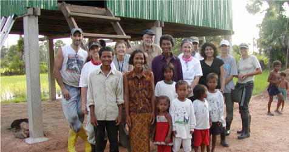
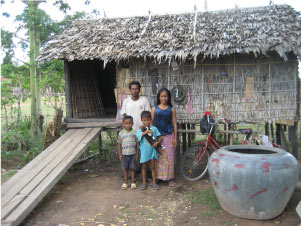

HISTORY OF VOLUNTEERS AND HOUSEBUILDING:
In early 1995, Andy Payne, a teacher with United World College in Singapore, came to Cambodia and learned about Tabitha. Andy wanted his students to come and learn about poverty through a volunteer experience.
Tabitha Cambodia responded to this request by developing the house building project. The concept was to provide a learning experience that taught the recent history of Cambodia and to combine this learning with a practical experience of the impact on many people here. This was to be done through building a small home for a family in our project.
From 1995 when the first team arrived until 2003 – the number of houses built was deeply affected by various coup attempts within Cambodia and concern over health issues such as SARS and the bird flu. Since 2003, the number of volunteers and the house being built have increased from 300 per year to a current average of 1000 plus per year.
PURPOSES OF VOLUNTEER HOUSEBUILDING:
1.To provide an in depth and meaningful experience for foreigners visiting Cambodia. The team members will experience not only the tourist attractions but will come to understand and befriend Cambodians - both the poorest and the middle class.
2.To educate volunteers about poverty and the issues involved - it is an education in the causes of poverty, the results of poverty and solutions to poverty.
3.To become partners with Tabitha-Cambodia in our outreach - team members become volunteer sales people as well as fund raise for various projects.
4.To give Cambodians the opportunity to teach foreigners the skills of house building - rather than being taught by the foreigners - develops a deep sense of pride.
5.The families chosen represent the very poorest in their communities as well as being role models for their courage and faith in their own ability to
overcome seemingly insurmountable odds.
PROCESSES OF SELECTING FAMILIES:
Many families participating in the “Community Development Through Family Savings Program” are able to save enough money to buy land and the materials to build a house. However, some very poor families cannot save all the money required for land and a house – for example, widows, single mothers, landmine victims, children orphaned as a result of AIDS, etc.
Community elders and Tabitha staff select the neediest families, who are to receive a house, from within the participant’s of the savings program in a community. Each family selected will contribute $50 USD towards the materials of their home – the team pays the rest. Families that are receiving a home must own the land where the house will be built.
Tabitha Cambodia invites international volunteer building teams to Cambodia to finance the materials for the houses and these teams then work, under the direction of Khmer builders, to complete the simple houses.
Quick Facts on How to Arrange a House Building Trip
1) ARRANGING A TEAM
What sort of groups form house-building teams?
. SchoolsCorporates
. Rotaries and other volunteer organizations
. Church groups
. Family Teams
. Individuals
Does Tabitha Cambodia itself arrange House Building trips?
1. Tabitha Cambodia does not set up or arrange a team of house builders – that is done in countries of origin – dates for the actual finishing of houses are done in conjunction with Janne Ritskes, Director of Tabitha Cambodia.
2. For liability reasons, Tabitha Cambodia does not arrange or sponsor house building volunteers. All volunteers come with the understanding that they responsible for their own liabilities.
3. Tabitha Cambodia does not have the facility for volunteers passing through Cambodia on a trip, to join already existing teams in country.
What is a typical Tabitha Cambodia house-building trip schedule?
| Tabitha Cambodia has developed a very successful “formula” for house-building trips. Typically, this includes: |
| Day 1 |
Day 2* |
Day 3& 4 |
Day 5 |
. Half-day taken up at Tabitha Cambodia with an orientation briefing by Janne Ritskes.
. Half-day taken up by visits to Tuol Sleng Prison (S-21) |
. Travel day to regional city/town (if building away from Phnom Penh ) |
. Building houses |
. Travel back to Phnom Penh. End of trip.
|
* if your team is staying in Phnom Penh, delete Days 2 and 5
Does the team need experience building?
Tabitha building teams do not actually "build" houses; they "complete" houses by nailing on the walls and floors. Prior to the team's arrival, a Cambodian builder under contract to Tabitha (the "Contractor"), actually builds the foundations, frame and roof. Your team should include members who are reasonably adept with a hammer and at least some who are comfortable working from ladders. The contractor (and the families) will guide and direct you.
When to go?
Tabitha can accommodate building teams at any time of the year except:
. Between December 20th and December 31th
. Khmer New Year ( the holiday is around the week of April 10th-23th)
Tabitha Cambodia will be closed for other specific public holidays such as Pchum Ban (September) and the Water Festival (November)
Tabitha Cambodia is closed on Sundays and does not work on that day. Please make your schedules to bear this in mind.
What arrangements will Tabitha Cambodia make for you?
. Book the bus or vans to the building site (from Phnom Penh or the regional city / town where you are staying)
. Book the hotel -- ONLY if you are staying outside Phnom Penh
. Bring the baguettes for lunch (your team will have to purchase everything else for site lunches)
. Bring the drinking water to the building site
. Provide water to cool down ("Water break")
. Provide a safe area to store bags etc. at the building site.
Each team is required to reimburse Tabitha for the cost of bus/van hire, water on site and baguettes at the end of the build.
How many people can be in a team and how many houses can my team build?
Teams build between 6 and 40 houses depending on:
. Size of the team
. The amount of fundraising the team can do
. The length of the trip
Travel to Cambodia is relatively expensive and teams have been anticipating the trip for months, it is therefore important to ensure that the team members feel as though they have worked hard each day. It is disappointing to the team to finish building too early in the day, so make sure that you build enough houses to keep the team busy.
Due to the shortage of wood in Cambodia, the walls of all houses are now made from a thin corrugated iron. This material is very sharp, so all volunteer builders should wear protective gloves. Nailing on this corrugated iron is quicker than nailing on the wooden planks previously used for the walls. This means that teams can now build more houses.
What are the actual costs for houses?
The cost for each house is US$1,700.
The minimum number of houses to be built must be 6 houses per team.
Housebuilding funds must be remitted to Cambodia six weeks prior to housebuilding date. Tabitha Cambodia needs to get government approval, buy and move materials and build the frames of the houses at least 6 weeks before a team arrives.
The full liability for a particular housebuilding project by a team must be fully paid first before they can do the next housebuilding.
What are the additional costs?
Budget for:
. Airfares to and from Cambodia
. Accommodation , meals and travel in Cambodia
. Travel and accommodation before and after the house building trip
NEXT STEP
Tabitha Cambodia:
Contact Tabitha Cambodia and confirm a building date and itinerary. We will need to know:
. Date of arrival
. Team size and composition (adults/children/males/females)
. Number of houses to be built
Tabitha Cambodia has over 100 international building teams per year and so:
. Plan 6-12 months ahead
. Try to be flexible with dates.
Make arrangements to have funds in Cambodia six weeks prior to housebuilding date. Tabitha Cambodia needs to get government approval, buy and move materials and build the frames of the houses at least 6 weeks before a team arrives.
Cultural Rules for Volunteers:
The cardinal rule as a volunteer for Tabitha Cambodia is the principle of servant hood. ITS NOT ABOUT YOU – it’s about the people you have come to serve – it is all about them and putting them first.
Following are some of the rules to follow while house building with Tabitha Cambodia:
- Do not pick up or touch the children – foreigners are seen as pedophiles or as wanting to take children – your actions meant to make you feel good are seen very differently in the eyes of Cambodians. If you don’t touch strange children in your home countries, please don’t touch children in Cambodia.
- No pictures of children may be shown on any public forum such as face book, instagram, etc.
- No drugs, no prostitution is allowed while under Tabitha Cambodia volunteer trips
- Do not touch people – satu in greeting – if you touch someone they should be the same sex as yourself
- Do not feel offended if villagers touch your skin or hair. We are abnormal in their eyes – and they are fascinated by our color, hairy arms and funny colored eyes and hair. Remember blue eyes in Cambodia mean that you are blind – cataracts are endemic and change dark eyes blue.
- Do not give anything to anyone – especially at house building sites – your generosity causes discord and jealousy. Street begging is a lucrative business – giving money to street children insures that they will not be allowed to go to school. Begging is run by syndicates!
- Do not share your food with people in the community – often our food makes them ill – they are not used to preservatives or the many weird things that we eat. You are welcome to eat village food – if it causes you to be sick – do not complain. Be wise.
- Drink only bottled water!
- There is absolutely no drinking of alcoholic beverages allowed in or around our communities
- Dress appropriately – both sexes must wear t-shirts that have sleeves and are modest; long shorts or long pants – some tourist’s areas will refuse you entry without long pants and proper t-shirts – avoid wearing blue jeans – this is a very hot country. Proper dress in communities is an absolute.
- Only wear closed in shoes such as sneakers at house building sites.
- Foreigners are seen as weak people by Cambodians – we are seen as spoiled and silly. Our overreaction to minor scrapes and cuts confirms these beliefs. If you are injured during house building – do not over react – instead you and you alone should go to the medic on the team – the rest of the team – mind your own business and continue to work.
- There is no electricity, running water or western toilets in our communities. Be prepared to use a squat pot, wash out of water barrels. Please take along your own toilet paper plus a bag to put the paper in and take it back to the hotel for disposal.
- Water breaks – the pouring of water over your heads will cool you down and keep you cool throughout the day. No heat stroke allowed!
- No electronics are allowed in the community – the team should assign one person to take pictures of all the volunteers working.
- Teams must ensure that they have a suitable medical kit with them. Injuries are solely the responsibility of teams and team members.
- Please make sure that you take all your garbage with you when leaving the village.
- Please be prepared to leave your hotel on time for the work site – traffic is very unpredictable. Also this shows respect for Tabitha staff as well as your co volunteers.
- Getting a massage may be a negative experience especially for females. Make sure you choose a good massage place. Female students must be accompanied by a responsible adult and must be in sight at all times.
- Be very aware of your surroundings at all times. Never take a motorbike taxi. If taking a tuk-tuk, be aware that you are targets for robberies. You have rental vans at your disposal – use them.
- Limit the use of jewelry – be discreet with your money. On house building days – leave your passports at the hotels.
- Do not make promises to villagers – do not promise pictures or money – we will not honor your promises!!! You will just re-affirm what Cambodians believe about us - we are good time people with no substance.
- Have a good time – a smile goes a long way and makes your day a lot more fun.